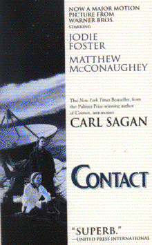

Contactby Carl Saganpublisher: Ballantine Books Fiction, 433 pages |  (book cover art, Copyright ©1997 Warner Bros.) Used with Permission. |
As story of Earth's first detection of extraterrestrial intelligence. A signal is detected and then decoded, and a ship is built to send one person "there", whereever that is. The entire process takes place against a backdrop of the interaction of political, social, religious, and scientific pressures. (Yes, this was made into a movie starring Jodie Foster).Recommended for: female scientists of the future, people who like contemporary fiction, people with an opinion about the way science is performed and funded in this country.Note: Read the book. Don't just watch the movie!
Deadline: Peer Review Session on February 8, 2005; paper due February 10, 2005.
You should write a 3 - 4 page essay on one of the following questions. Your essay should include examples and references to the book, unless otherwise specified. Page number references are sufficient for citing material from the primary book. If you use outside materials, cite your sources in full. If you would rather write on a different topic, you may, but clear it with Mr. Howe or Ms. Sullivan first.
You will give a 10 minute presentation on both of the following:
Along with this presentation, you should have a graphic that will go with it. A Power Point presentation is recommended, but if you have a special idea for a something else, such as a model, an original video presentation, or a well done drawing/ painting/ sculpture/ etc., you may do so, provided it involves a similar level of effort and polish. Speak to Mr. Howe or Ms. Sullivan first if you are considering an alternate graphic format to the Power Point.